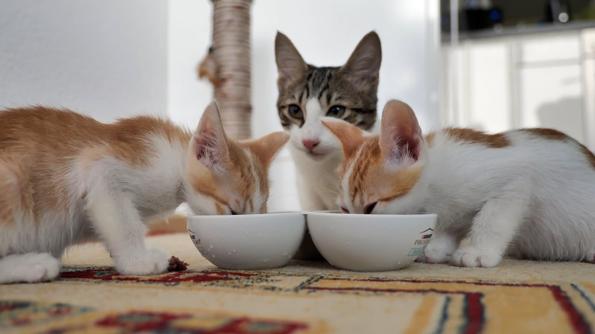

The first week with a kitten is a foundation period. Instead of trying to introduce every room and every person immediately, create a comfortable base area and let confidence grow gradually.
Set up a kitten base area
Provide food, water, a litter box, a comfortable sleeping spot, safe hiding options and age-appropriate toys. Keep food and water separate from the litter area. Remove hazards such as loose cords, small objects and inaccessible gaps where a kitten could become trapped.
Make litter habits easy
Place the litter box somewhere quiet and easy to reach. Show the kitten where it is after meals, sleep and play. Keep it clean because many cats are sensitive to dirty litter areas. If a kitten repeatedly avoids the box, discuss the problem with a veterinarian rather than assuming it is simply behavioral.
Keep meals consistent
Use food appropriate for kittens and follow the feeding guidance for the product and the kitten's age. Fresh water should always be available. Avoid improvising a homemade diet unless it has been properly formulated for the kitten.
Give play and rest equal importance
Kittens naturally alternate between bursts of activity and long periods of rest. Short interactive play sessions can provide exercise and enrichment without turning the entire day into stimulation.
Introduce people calmly
Let the kitten approach at its own pace. Quiet voices, gentle handling and short positive interactions are better than forcing contact. Children should learn how to handle a small animal safely and respectfully.
Schedule a health check
A veterinarian can assess the kitten's general health and create a vaccination, parasite-control and nutrition plan suited to its age and local circumstances. Bring records supplied with the kitten.